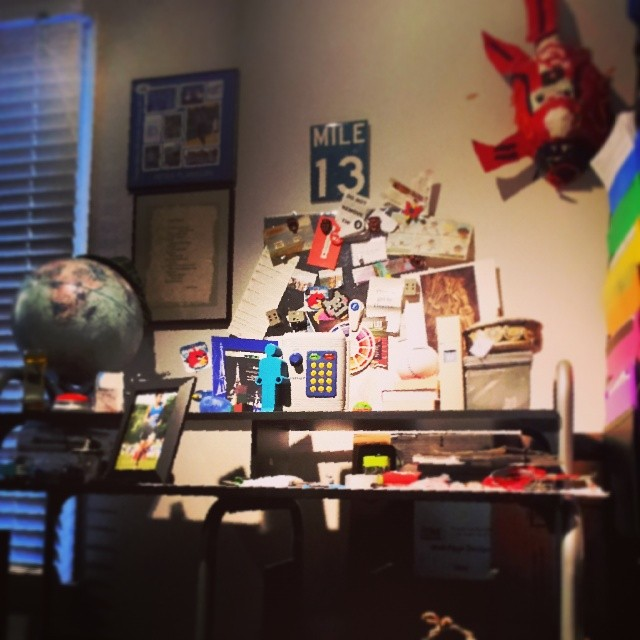
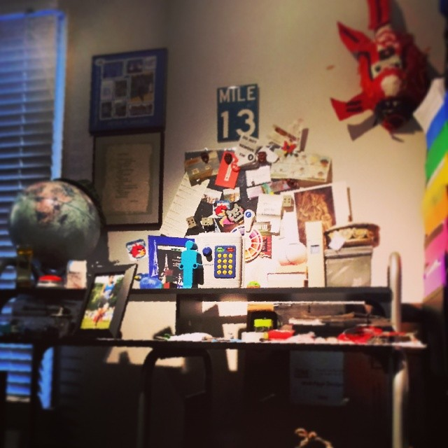

PJFlanagan1@gmail.com
flanapet@umich.edu
Hello and welcome!
My name is Peter James Flanagan, and I am computer science major at the University of Michigan. I just obtained this domain (special thanks to MHacks) so this website is currently on it's way to being done. I'll add my resume, links to things about me, links to projects I've done, and links to things I like. So many links! In the meantime you can check out some of these basic filler things maybe? I hope to hear from you if you enjoy it!
MRun
Click here to view the MRun website project I am working on!
Every Three Weekly
Click here to see the Every Three Weekly mobile page I am working on which looks similar to this one, just a little more stripped down and built especially for mobile.
Pace Calculator
Check out this fancy artsy Pace Calculator for calculating splits! I made it before I really understood how to make functions so check out the mess of source code on that. Yikes!
Colors Of Pi
This one is more of an art project that depicts the hexidecimal colors that pi makes when you split it into sixes. For your viewing pleasure!
In the near future I will add a link to my resume, which if you're here, you are probably holding. Sites that I find interesting and you might too. A video of a speech I gave that some people thought was good. My facebook, twitter, and instagram accounts because I am a child and MUST have all of those. And a LinkedIn once I grow up and make one so you can connect with me if you deem me worthwhile. Thanks!